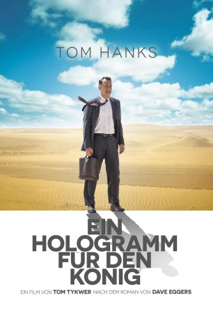

gesehen am 20.10.2016
gesehen am 20.10.2016Alternativ: A Hologram for the King gesehen am 20.10.2016
 
 IMDB-Wertung: 6.1 / 10
IMDB-Wertung: 6.1 / 10  Metascore:
Metascore: 
Der 54-jährige Vertriebsmanager Alan Clay soll in Saudi-Arabien dem König Abdullah ein holografisches Telefonkonferenzsystem verkaufen. Seine Perspektiven haben sich nach der Finanzkrise und nach seinen persönlichen Krisen mit gescheiterter Ehe, weit unter Wert verkauftem Haus und fragwürdigen Outsorcing-Geschäften als Manager beim Fahrradhersteller Schwinn dramatisch reduziert. Zusätzlich zu diesen Problemen wird er vom Jetlag, einer Zyste am Rücken und Alkoholmissbrauch geplagt. Während des tagelangen Wartens auf Termine mit Geschäftspartnern lernt er seinen Fahrer Yousef und die schöne Ärztin Dr. Zahra Hakeem kennen. Beeindruckt von diesen Begegnungen und unter dem Einfluss der neuen kulturellen Eindrücke wird das Treffen mit dem König immer mehr zur Nebensache für Alan.
Jahr: 2016
Dauer: 98 Minuten
FSK: 6
Land: England Studio: X Verleih AGTonspuren: DTS - ,
Untertitel: Deutsch,
Auflösung: 1080p (1920x808) Größe: 5457 MB
Regisseur:  Tom Tykwer
Tom Tykwer
Drehbuch: Buck Henry
Soundtrack:
Darsteller:
 Tom Hanks als Alan
Tom Hanks als Alan Sarita Choudhury als Zahra
Sarita Choudhury als Zahra Sidse Babett Knudsen als Hanne
Sidse Babett Knudsen als Hanne Jane Perry als Ruby
Jane Perry als Ruby Tom Skerritt als Ron
Tom Skerritt als Ron Michael Baral als Young Ron
Michael Baral als Young Ron David Menkin als Brad
David Menkin als Brad Christy Meyer als Cayley
Christy Meyer als Cayley Ben Whishaw als Dave
Ben Whishaw als Dave Eric Meyers als Eric Randall
Eric Meyers als Eric Randall Khalid Laith als Karim Al-Ahmad
Khalid Laith als Karim Al-Ahmad Jeff Burrell als Party Man 1
Jeff Burrell als Party Man 1 Ian T. Dickinson als Party Man 2
Ian T. Dickinson als Party Man 2 Michael Ihnow als Alan's colleague , uncredited
Michael Ihnow als Alan's colleague , uncredited Rolf Saxon als Joe Trivoli , uncredited
Rolf Saxon als Joe Trivoli , uncreditedDatei: X:\2016(G-M)\Hologramm für den König, Ein (2016, FSK6, 1920x808).mkv seit 22.06.2016
Festplatte: HD 2016(A-Z)
 Es gibt insgesamt 164 Filme in der Gruppe '2016(G-M)'
Es gibt insgesamt 164 Filme in der Gruppe '2016(G-M)'